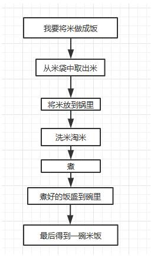
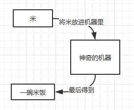
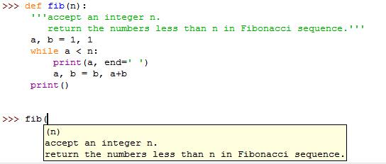

第 1 页 · 课程目标及重难点
课程目标及重难点
1.了解函数的定义；
2.熟悉函数的应用场景；
3.理解函数的参数传递过程；
4.掌握函数的定义和调用方法；
5.明确程序开发规范的重要性，培养学生的职业素质和道德规范。
重点：函数的参数传递过程。
难点：自定义函数与序列解包连用。
第 2 页 · 函数
函数
函数：是指组织好、可重复使用的，用来实现单一或相关联功能的代码段。
函数作用：实现代码的重复使用，实现代码的一致性(一致性是指只要修改函数的代码， 所有调用该函数的地方都能得到体现)。
Python中的函数可以分为如下几类：
内置函数：由Python提供，可以直接拿来使用的函数，如：input()、print()、max()、min()等等； 自定义函数：用户根据需求自己定义的函数；
匿名函数：没有显式定义的函数，一般只有一行表达式，只能使用一次。
第 3 页 · 5.1 内置函数
5.1 内置函数
Python提供了69个内置函数，可通过查询Python的官方文档了解内置函数的功能； Python官方网站：https://docs.python.org/zcn/3.7/library/functions.html
注意
注意
标识符命名时不要使用内置函数名，虽然使用 内置函数名命名时Python不会报错，但是会导 致同名的内置函数被覆盖，从而无法使用。
第 4 页 · 5.2 自定义函数（创造属于你的函数）
5.2 自定义函数（创造属于你的函数）


如果想实现的功能内置函数无法完成，该如何处理呢？
第 5 页 · 自定义函数语法：
自定义函数语法：
def 函数名(形参)： # 形参根据需求设置，可有可无，多个形参用逗号隔开
<代码块> # 注意冒号和语句缩进
return 表达式 # return函数返回值关键字，函数执行完毕后给调用者的结果称为函数的“返回值”，没有
return时返回结果为None
函数名(实参) # 调用函数，有参函数传递实参，实参与形参一一对应
在Python中，用户可以自己创建函数，这类用户自己创建的函数称为自定义函数。
自定义函数：是指用一些符号代替变量赋值，等到使用这个算法的时候再把具体的变量金额填充进去，将原先适用于一种情况的算法改造成一个通用的算法。
5.2.1 函数的定义与调用
第 6 页 · 5.2.1 函数的定义与调用
5.2.1 函数的定义与调用
注意事项：
函数形参不需要声明类型，也不需要指定函数返回值类型；
即使该函数不需要接收任何参数，也必须保留一对空的圆括号；
括号后面的冒号必不可少；
函数体相对于def关键字必须保持一定的空格缩进；
Python允许嵌套定义函数。
第 7 页 · 5.1 函数定义
5.1 函数定义
5.2.1 函数的定义与调用
def dfb(x):
'''一系列操作'''
return '一碗%s饭' %x
a = dfb('米')
b = dfb('米')
print(a)
print(b)
第 8 页 · 5.2.1 函数的定义与调用
5.2.1 函数的定义与调用
在自定义函数的时侯，尽量为函数的定义加上注释，可以为用户提供友好的提示。

注意：